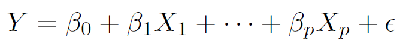
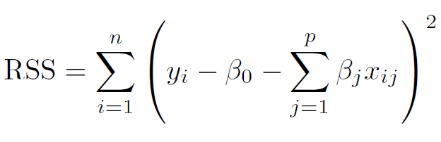
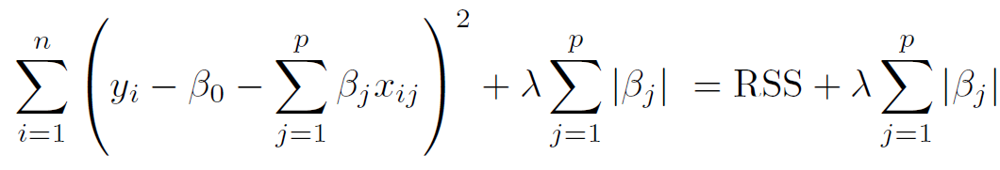
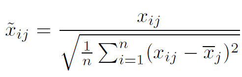
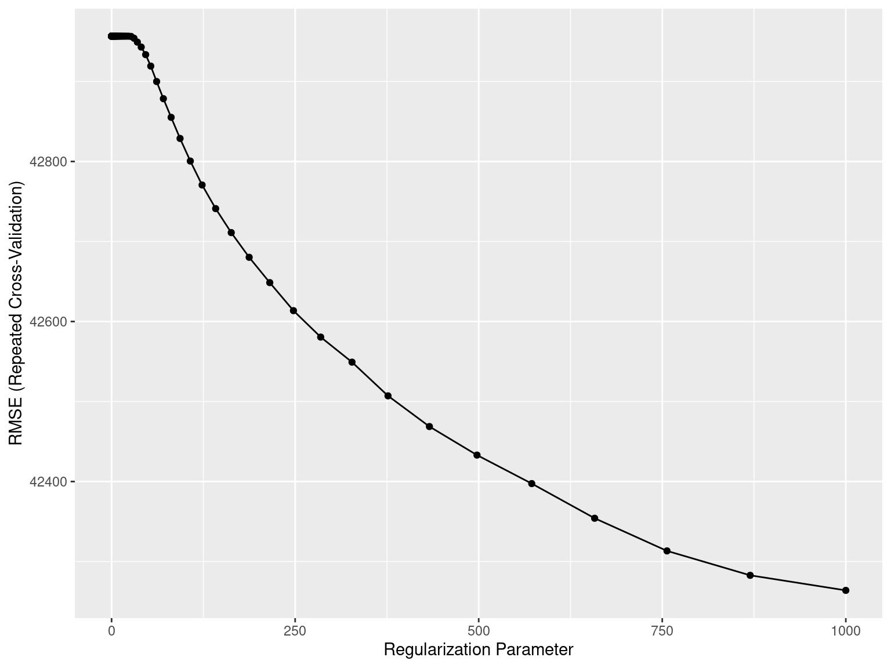
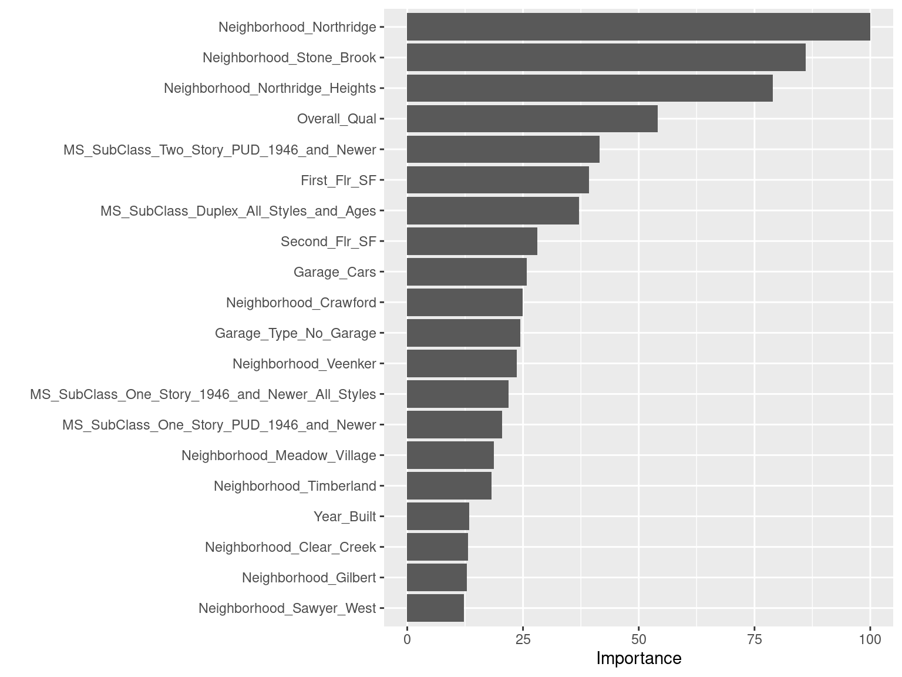
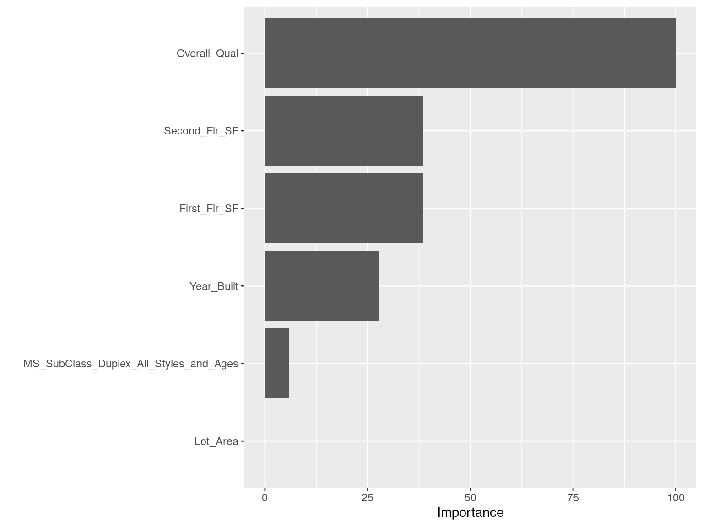
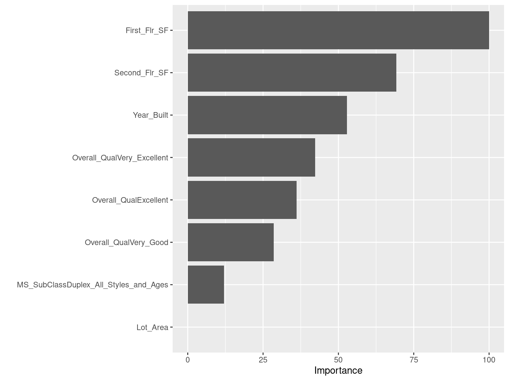

Chapter 7 Linear Model Selection and Regularization
The standard linear model,

Benefits: Simple, interpretable, often shows good predictive performance.
Limitations:
Prediction Accuracy: If \(n\) is not big (also when \(p>n\)), variance can be high resulting in overfitting and poor predictive performance.
Model Interpretability: Irrelevant features lead to unnecessary model complexity.
7.1 Alternatives to Least Squares
Extensions/Modifications/Improvements to Least Squares:
Subset Selection: Identify a subset of \(p\) predictors and then fit a linear model using least squares.
Shrinkage/Regularization: Fit a model using \(p\) predictors, but shrink some of the estimated coefficients towards zero. Reduces variance and can also perform variable selection.
Dimension Reduction: Project \(p\) predictors onto a \(M\)-dimensional subspace, where \(M<p\). Achieved by computing \(M\) different linear combinations or projections of the \(p\) predictors. Fit a linear model using these \(M\) predictors by least squares.
7.2 Shrinkage/Regularization Methods
Fit a model containing all \(p\) predictors using a technique that shrinks the coefficient estimates towards zero.
Ridge Regression
Lasso
Shrinking the coefficient estimates significantly reduces their variance.
7.3 The Lasso
Acronym for Least Absolute Shrinkage and Selection Operator.
- Standard Linear Model
Given a training dataset, for \(i=1,\ldots,n\)
\[y_i=\beta_0+\beta_1 x_{i1}+ \ldots + \beta_p x_{ip} + \epsilon_i = \beta_0 + \displaystyle \sum_{j=1}^p \beta_j x_{ij} + \epsilon_i\]

- Lasso

\(\lambda \displaystyle \sum_{j=1}^{p} |\beta_j|\): Shrinkage Penalty
\(\lambda \ge 0\): Tuning/Regularization Parameter
7.4 The Lasso
This method not only shrinks the coefficient estimates towards zero, but also makes some of the coefficient estimates exactly equal to zero (when the tuning parameter \(\lambda\) is sufficiently large).
Hence, the lasso performs variable selection.
- We say that the lasso yields sparse models, that is, models that involve only a subset of the variables.
7.5 The Lasso: Scaling of Predictors
Standard least squares (regression) coefficient estimates are scale equivariant: multiplying \(X_j\) by a constant \(c\) simply leads to a scaling of the least squares coefficient estimates by a factor of \(1/c\). In other words, regardless of how the \(j^{th}\) predictor is scaled, \(X_j \hat{\beta}_j\) will remain the same.
In contrast, the lasso coefficient estimates can change substantially when multiplying a given predictor by a constant. Apply lasso after standardizing the predictors.

7.6 The Lasso: Implementation
Ames Housing Dataset
ames <- readRDS("AmesHousing.rds") # load dataset
ames$Overall_Qual <- factor(ames$Overall_Qual, levels = c("Very_Poor", "Poor", "Fair", "Below_Average",
"Average", "Above_Average", "Good", "Very_Good",
"Excellent", "Very_Excellent"))# split data
set.seed(021423) # set seed
index <- createDataPartition(y = ames$Sale_Price, p = 0.7, list = FALSE) # consider 70-30 split
ames_train <- ames[index,] # training data
ames_test <- ames[-index,] # test data7.7 The Lasso: Implementation
Ames Housing Dataset
# create recipe and blueprint, prepare and apply blueprint
set.seed(021423) # set seed
ames_recipe <- recipe(Sale_Price ~ ., data = ames_train) # set up recipe
blueprint <- ames_recipe %>%
step_nzv(Street, Utilities, Pool_Area, Screen_Porch, Misc_Val) %>% # filter out zv/nzv predictors
step_impute_mean(Gr_Liv_Area) %>% # impute missing entries
step_integer(Overall_Qual) %>% # numeric conversion of levels of the predictors
step_center(all_numeric(), -all_outcomes()) %>% # center (subtract mean) all numeric predictors
step_scale(all_numeric(), -all_outcomes()) %>% # scale (divide by standard deviation) all numeric predictors
step_other(Neighborhood, threshold = 0.01, other = "other") %>% # lumping required predictors
step_dummy(all_nominal(), one_hot = TRUE) # one-hot/dummy encode nominal categorical predictors
prepare <- prep(blueprint, data = ames_train) # estimate feature engineering parameters based on training data
baked_train <- bake(prepare, new_data = ames_train) # apply the blueprint to training data for building final/optimal model
baked_test <- bake(prepare, new_data = ames_test) # apply the blueprint to test data for future use7.8 The Lasso: Implementation
Ames Housing Dataset
Implement CV to tune the hyperparameter \(\lambda\).
set.seed(021423) # set seed
cv_specs <- trainControl(method = "repeatedcv", number = 5, repeats = 5) # CV specifications
lambda_grid <- 10^seq(-3, 3, length = 100) # grid of lambda values to search over
library(glmnet)## Loading required package: Matrix##
## Attaching package: 'Matrix'## The following objects are masked from 'package:tidyr':
##
## expand, pack, unpack## Loaded glmnet 4.1-6lasso_cv <- train(blueprint,
data = ames_train,
method = "glmnet", # for lasso
trControl = cv_specs,
tuneGrid = expand.grid(alpha = 1, lambda = lambda_grid), # alpha = 1 implements lasso
metric = "RMSE")
# results from the CV procedure
lasso_cv$bestTune # optimal lambda## alpha lambda
## 100 1 1000min(lasso_cv$results$RMSE) # RMSE for optimal lambda## [1] 42263.957.9 The Lasso: Implementation
Ames Housing Dataset
Results from the CV procedure.
ggplot(lasso_cv) # lambda vs. RMSE plot
7.10 The Lasso: Implementation
Ames Housing Dataset
We will now build the optimal lasso model on the modified training data using the optimal \(\lambda\).
# create datasets required for 'glmnet' function
X_train <- model.matrix(Sale_Price ~ ., data = baked_train)[, -1] # training features without intercept
Y_train <- baked_train$Sale_Price # training response
X_test <- model.matrix(Sale_Price ~ ., data = baked_test)[, -1] # test features without intercept
# build optimal lasso model
final_model <- glmnet(x = X_train, y = Y_train,
alpha = 1, # alpha = 1 builds lasso model
lambda = lasso_cv$bestTune$lambda, # using optimal lambda from CV
standardize = FALSE) # we have already standardized during data preprocessing# obtain predictions and test set RMSE
final_model_preds <- predict(final_model, newx = X_test) # obtain predictions
sqrt(mean((final_model_preds - baked_test$Sale_Price)^2)) # calculate test set RMSE## [1] 30840.57.11 The Lasso: Implementation
Ames Housing Dataset
The coefficients for the optimal lasso model can be obtained from
coef(final_model) # estimated coefficients from final lasso model## 58 x 1 sparse Matrix of class "dgCMatrix"
## s0
## (Intercept) 176064.4047
## Gr_Liv_Area 4818.3193
## Garage_Cars 10866.6279
## Garage_Area .
## Overall_Qual 34950.7772
## Lot_Area 2450.1548
## Lot_Frontage 196.4699
## Open_Porch_SF 416.8881
## TotRms_AbvGrd -2617.0296
## First_Flr_SF 25444.3738
## Second_Flr_SF 17393.1449
## Year_Built 7404.4553
## Garage_Type_Attchd .
## Garage_Type_Basment .
## Garage_Type_BuiltIn .
## Garage_Type_CarPort .
## Garage_Type_Detchd .
## Garage_Type_More_Than_Two_Types .
## Garage_Type_No_Garage .
## Neighborhood_North_Ames .
## Neighborhood_College_Creek .
## Neighborhood_Old_Town .
## Neighborhood_Edwards .
## Neighborhood_Somerset .
## Neighborhood_Northridge_Heights 19267.6111
## Neighborhood_Gilbert .
## Neighborhood_Sawyer .
## Neighborhood_Northwest_Ames .
## Neighborhood_Sawyer_West .
## Neighborhood_Mitchell .
## Neighborhood_Brookside .
## Neighborhood_Crawford .
## Neighborhood_Iowa_DOT_and_Rail_Road .
## Neighborhood_Timberland .
## Neighborhood_Northridge 13301.0524
## Neighborhood_Stone_Brook .
## Neighborhood_South_and_West_of_Iowa_State_University .
## Neighborhood_Clear_Creek .
## Neighborhood_Meadow_Village .
## Neighborhood_Bloomington_Heights .
## Neighborhood_Veenker .
## Neighborhood_other .
## MS_SubClass_One_Story_1946_and_Newer_All_Styles 12281.5841
## MS_SubClass_One_Story_1945_and_Older .
## MS_SubClass_One_Story_with_Finished_Attic_All_Ages .
## MS_SubClass_One_and_Half_Story_Unfinished_All_Ages .
## MS_SubClass_One_and_Half_Story_Finished_All_Ages .
## MS_SubClass_Two_Story_1946_and_Newer .
## MS_SubClass_Two_Story_1945_and_Older .
## MS_SubClass_Two_and_Half_Story_All_Ages .
## MS_SubClass_Split_or_Multilevel .
## MS_SubClass_Split_Foyer .
## MS_SubClass_Duplex_All_Styles_and_Ages .
## MS_SubClass_One_Story_PUD_1946_and_Newer .
## MS_SubClass_One_and_Half_Story_PUD_All_Ages .
## MS_SubClass_Two_Story_PUD_1946_and_Newer .
## MS_SubClass_PUD_Multilevel_Split_Level_Foyer .
## MS_SubClass_Two_Family_conversion_All_Styles_and_Ages .7.12 The Lasso: Implementation
Ames Housing Dataset
# variable importance
vip(object = lasso_cv, num_features = 20, method = "model")
7.13 Your Turn!!!
You will work with the Hitters.rds dataset. Please download the dataset from Canvas, upload it to Posit Cloud, and load it using the following code.
Hitters <- readRDS("Hitters.rds") # load datasetThe dataset contains baseball statistics from the 1986 and 1987 seasons. The task is to predict Salary using the rest of the variables in the dataset. Compare the performance (in terms of RMSE) of the following two models:
A linear regression model;
A LASSO model chosen by CV. Consider the grid of possible \(\lambda\) values as
lambda_grid <- 10^seq(-2, 2, length = 100).
Perform the following tasks.
Investigate the dataset and complete any necessary tasks.
Split the data into training and test sets (80-20).
Perform required data preprocessing and create the blueprint. If using
step_dummy(), setone_hot = FALSE. Prepare the blueprint on the training data. Obtain the modified training and test datasets.Implement 5-fold CV repeated 5 times for each of the models above.
Report the optimal CV RMSE of each model. Report the optimal value of \(\lambda\) for the LASSO model. Which model performs better in this situation?
Using the optimal model, obtain predictions on the test set. Calculate and report the test set RMSE.
Using the optimal model, obtain variable importance measures for the features.
7.14 Your Turn!!!
glimpse(Hitters)## Rows: 263
## Columns: 20
## $ AtBat <int> 315, 479, 496, 321, 594, 185, 298, 323, 401, 574, 202, 418, …
## $ Hits <int> 81, 130, 141, 87, 169, 37, 73, 81, 92, 159, 53, 113, 60, 43,…
## $ HmRun <int> 7, 18, 20, 10, 4, 1, 0, 6, 17, 21, 4, 13, 0, 7, 20, 2, 8, 16…
## $ Runs <int> 24, 66, 65, 39, 74, 23, 24, 26, 49, 107, 31, 48, 30, 29, 89,…
## $ RBI <int> 38, 72, 78, 42, 51, 8, 24, 32, 66, 75, 26, 61, 11, 27, 75, 8…
## $ Walks <int> 39, 76, 37, 30, 35, 21, 7, 8, 65, 59, 27, 47, 22, 30, 73, 15…
## $ Years <int> 14, 3, 11, 2, 11, 2, 3, 2, 13, 10, 9, 4, 6, 13, 15, 5, 8, 1,…
## $ CAtBat <int> 3449, 1624, 5628, 396, 4408, 214, 509, 341, 5206, 4631, 1876…
## $ CHits <int> 835, 457, 1575, 101, 1133, 42, 108, 86, 1332, 1300, 467, 392…
## $ CHmRun <int> 69, 63, 225, 12, 19, 1, 0, 6, 253, 90, 15, 41, 4, 36, 177, 5…
## $ CRuns <int> 321, 224, 828, 48, 501, 30, 41, 32, 784, 702, 192, 205, 309,…
## $ CRBI <int> 414, 266, 838, 46, 336, 9, 37, 34, 890, 504, 186, 204, 103, …
## $ CWalks <int> 375, 263, 354, 33, 194, 24, 12, 8, 866, 488, 161, 203, 207, …
## $ League <fct> N, A, N, N, A, N, A, N, A, A, N, N, A, N, N, A, N, N, A, N, …
## $ Division <fct> W, W, E, E, W, E, W, W, E, E, W, E, E, E, W, W, W, E, W, W, …
## $ PutOuts <int> 632, 880, 200, 805, 282, 76, 121, 143, 0, 238, 304, 211, 121…
## $ Assists <int> 43, 82, 11, 40, 421, 127, 283, 290, 0, 445, 45, 11, 151, 45,…
## $ Errors <int> 10, 14, 3, 4, 25, 7, 9, 19, 0, 22, 11, 7, 6, 8, 10, 16, 2, 5…
## $ Salary <dbl> 475.000, 480.000, 500.000, 91.500, 750.000, 70.000, 100.000,…
## $ NewLeague <fct> N, A, N, N, A, A, A, N, A, A, N, N, A, N, N, A, N, N, N, N, …# categorical feature: League, Division, NewLeague (all nominal)
# Rest of the features are numerical7.16 Your Turn!!!
summary(Hitters)## AtBat Hits HmRun Runs
## Min. : 19.0 Min. : 1.0 Min. : 0.00 Min. : 0.00
## 1st Qu.:282.5 1st Qu.: 71.5 1st Qu.: 5.00 1st Qu.: 33.50
## Median :413.0 Median :103.0 Median : 9.00 Median : 52.00
## Mean :403.6 Mean :107.8 Mean :11.62 Mean : 54.75
## 3rd Qu.:526.0 3rd Qu.:141.5 3rd Qu.:18.00 3rd Qu.: 73.00
## Max. :687.0 Max. :238.0 Max. :40.00 Max. :130.00
## RBI Walks Years CAtBat
## Min. : 0.00 Min. : 0.00 Min. : 1.000 Min. : 19.0
## 1st Qu.: 30.00 1st Qu.: 23.00 1st Qu.: 4.000 1st Qu.: 842.5
## Median : 47.00 Median : 37.00 Median : 6.000 Median : 1931.0
## Mean : 51.49 Mean : 41.11 Mean : 7.312 Mean : 2657.5
## 3rd Qu.: 71.00 3rd Qu.: 57.00 3rd Qu.:10.000 3rd Qu.: 3890.5
## Max. :121.00 Max. :105.00 Max. :24.000 Max. :14053.0
## CHits CHmRun CRuns CRBI
## Min. : 4.0 Min. : 0.00 Min. : 2.0 Min. : 3.0
## 1st Qu.: 212.0 1st Qu.: 15.00 1st Qu.: 105.5 1st Qu.: 95.0
## Median : 516.0 Median : 40.00 Median : 250.0 Median : 230.0
## Mean : 722.2 Mean : 69.24 Mean : 361.2 Mean : 330.4
## 3rd Qu.:1054.0 3rd Qu.: 92.50 3rd Qu.: 497.5 3rd Qu.: 424.5
## Max. :4256.0 Max. :548.00 Max. :2165.0 Max. :1659.0
## CWalks League Division PutOuts Assists
## Min. : 1.0 A:139 E:129 Min. : 0.0 Min. : 0.0
## 1st Qu.: 71.0 N:124 W:134 1st Qu.: 113.5 1st Qu.: 8.0
## Median : 174.0 Median : 224.0 Median : 45.0
## Mean : 260.3 Mean : 290.7 Mean :118.8
## 3rd Qu.: 328.5 3rd Qu.: 322.5 3rd Qu.:192.0
## Max. :1566.0 Max. :1377.0 Max. :492.0
## Errors Salary NewLeague
## Min. : 0.000 Min. : 67.5 A:141
## 1st Qu.: 3.000 1st Qu.: 190.0 N:122
## Median : 7.000 Median : 425.0
## Mean : 8.593 Mean : 535.9
## 3rd Qu.:13.000 3rd Qu.: 750.0
## Max. :32.000 Max. :2460.07.17 Your Turn!!!
nearZeroVar(Hitters, saveMetrics = TRUE)## freqRatio percentUnique zeroVar nzv
## AtBat 1.000000 79.4676806 FALSE FALSE
## Hits 1.200000 49.4296578 FALSE FALSE
## HmRun 1.058824 13.3079848 FALSE FALSE
## Runs 1.428571 34.9809886 FALSE FALSE
## RBI 1.125000 35.7414449 FALSE FALSE
## Walks 1.222222 33.0798479 FALSE FALSE
## Years 1.000000 7.9847909 FALSE FALSE
## CAtBat 1.000000 97.7186312 FALSE FALSE
## CHits 1.500000 91.6349810 FALSE FALSE
## CHmRun 1.000000 49.0494297 FALSE FALSE
## CRuns 1.000000 85.9315589 FALSE FALSE
## CRBI 1.333333 85.9315589 FALSE FALSE
## CWalks 1.000000 78.7072243 FALSE FALSE
## League 1.120968 0.7604563 FALSE FALSE
## Division 1.038760 0.7604563 FALSE FALSE
## PutOuts 2.750000 75.6653992 FALSE FALSE
## Assists 1.000000 55.1330798 FALSE FALSE
## Errors 1.500000 11.0266160 FALSE FALSE
## Salary 1.333333 57.0342205 FALSE FALSE
## NewLeague 1.155738 0.7604563 FALSE FALSE# no zv/nzv features in the original data7.18 Your Turn!!!
# split data
set.seed(021423)
index <- createDataPartition(Hitters$Salary, p = 0.8, list = FALSE)
Hitters_train <- Hitters[index,] # training set
Hitters_test <- Hitters[-index,] # test set7.19 Your Turn!!!
nearZeroVar(Hitters_train, saveMetrics = TRUE)## freqRatio percentUnique zeroVar nzv
## AtBat 1.000000 82.5471698 FALSE FALSE
## Hits 1.250000 57.0754717 FALSE FALSE
## HmRun 1.000000 16.0377358 FALSE FALSE
## Runs 1.142857 39.1509434 FALSE FALSE
## RBI 1.142857 40.0943396 FALSE FALSE
## Walks 1.000000 37.7358491 FALSE FALSE
## Years 1.136364 9.4339623 FALSE FALSE
## CAtBat 1.000000 97.6415094 FALSE FALSE
## CHits 1.500000 91.9811321 FALSE FALSE
## CHmRun 1.000000 54.2452830 FALSE FALSE
## CRuns 1.000000 90.0943396 FALSE FALSE
## CRBI 1.333333 88.2075472 FALSE FALSE
## CWalks 1.000000 78.3018868 FALSE FALSE
## League 1.163265 0.9433962 FALSE FALSE
## Division 1.078431 0.9433962 FALSE FALSE
## PutOuts 2.000000 80.6603774 FALSE FALSE
## Assists 1.090909 59.9056604 FALSE FALSE
## Errors 1.388889 13.2075472 FALSE FALSE
## Salary 1.166667 60.3773585 FALSE FALSE
## NewLeague 1.231579 0.9433962 FALSE FALSE# no zv/nzv features in the training data7.20 Your Turn!!!
set.seed(021423)
Hitters_recipe <- recipe(Salary ~. , data = Hitters_train) # create recipeset.seed(021423)
# create blueprint with feature engineering steps
blueprint <- Hitters_recipe %>%
step_center(all_numeric(), -all_outcomes()) %>% # center numerical features
step_scale(all_numeric(), -all_outcomes()) %>% # scale numerical features
step_dummy(all_nominal(), one_hot = FALSE) # dummy encode nominal featuresset.seed(021423)
prepare <- prep(blueprint, data = Hitters_train) # estimate feature engineering parameters based on training dataset.seed(021423)
baked_train <- bake(prepare, new_data = Hitters_train) # apply the blueprint to training data
baked_test <- bake(prepare, new_data = Hitters_test) # apply the blueprint to test data7.21 Your Turn!!!
set.seed(021423)
cv_specs <- trainControl(method = "repeatedcv", number = 5, repeats = 5) # CV specificationsset.seed(021423)
# CV with linear regression
lm_cv <- train(blueprint,
data = Hitters_train,
method = "lm",
trControl = cv_specs,
metric = "RMSE")set.seed(021423)
# CV with LASSO
lambda_grid <- 10^seq(-2, 2, length = 100) # grid of lambda values
lasso_cv <- train(blueprint,
data = Hitters_train,
method = "glmnet",
trControl = cv_specs,
tuneGrid = expand.grid(alpha = 1, lambda = lambda_grid),
metric = "RMSE")7.22 Your Turn!!!
lm_cv$results$RMSE # CV RMSE for linear regression model## [1] 301.3199min(lasso_cv$results$RMSE) # CV RMSE for optimal LASSO## [1] 295.07lasso_cv$bestTune$lambda # optimal lambda## [1] 15.556767.23 Your Turn!!!
X_train <- model.matrix(Salary ~ ., data = baked_train)[, -1] # training features without intercept
Y_train <- baked_train$Salary # training response
X_test <- model.matrix(Salary ~ ., data = baked_test)[, -1] # test features without intercept
# build optimal lasso model
final_model <- glmnet(x = X_train, y = Y_train,
alpha = 1, # alpha = 1 builds lasso model
lambda = lasso_cv$bestTune$lambda, # using optimal lambda from CV
standardize = FALSE) # we have already standardized during data preprocessingfinal_model_preds <- predict(final_model, newx = X_test) # obtain predictions
sqrt(mean((final_model_preds - baked_test$Salary)^2)) # calculate test set RMSE## [1] 510.41677.25 Multivariate Adaptive Regression Splines (MARS)
Multivariate Adaptive Regression Splines (MARS) capture the nonlinear relationships in the data by assessing cutpoints (knots). The procedure assesses each data point for each predictor as a knot and creates a piecewise linear regression model with the candidate feature(s).
This procedure continues until many knots are found, producing a (potentially) highly non-linear prediction equation. Once the full set of knots has been identified, knots that do not contribute significantly to predictive accuracy can be sequentially removed. This process is known as pruning .
There are two tuning parameters associated with our MARS model:
the maximum degree of interactions, and
the number of terms retained in the final model after pruning.
We can use CV to identify the optimal combination of these tuning parameters .
7.26 MARS: Geometry
Figure 7.1: Adapted from Hands-on Machine Learning with R, Bradley Boehmke & Brandon Greenwell
7.27 MARS: Implementation
Ames Housing Dataset
# data splitting and preprocessing already done in the previous slides
set.seed(021423) # set seed
cv_specs <- trainControl(method = "repeatedcv", number = 5, repeats = 5) # CV specificationslibrary(earth) # for MARS technique## Loading required package: Formula## Loading required package: plotmo## Loading required package: plotrix## Loading required package: TeachingDemosset.seed(021423) # set seed
param_grid <- expand.grid(degree = 1:3, nprune = seq(1, 100, length.out = 10)) # grid of tuning parameters
mars_cv <- train(blueprint,
data = ames_train,
method = "earth",
trControl = cv_specs,
tuneGrid = param_grid,
metric = "RMSE")## Warning in cuts[nterm, ipred] == 0 && !is.null(xrange) && xrange[1, ipred] == :
## 'length(x) = 494 > 1' in coercion to 'logical(1)'
## Warning in cuts[nterm, ipred] == 0 && !is.null(xrange) && xrange[1, ipred] == :
## 'length(x) = 494 > 1' in coercion to 'logical(1)'
## Warning in cuts[nterm, ipred] == 0 && !is.null(xrange) && xrange[1, ipred] == :
## 'length(x) = 494 > 1' in coercion to 'logical(1)'
## Warning in cuts[nterm, ipred] == 0 && !is.null(xrange) && xrange[1, ipred] == :
## 'length(x) = 494 > 1' in coercion to 'logical(1)'
## Warning in cuts[nterm, ipred] == 0 && !is.null(xrange) && xrange[1, ipred] == :
## 'length(x) = 494 > 1' in coercion to 'logical(1)'
## Warning in cuts[nterm, ipred] == 0 && !is.null(xrange) && xrange[1, ipred] == :
## 'length(x) = 494 > 1' in coercion to 'logical(1)'
## Warning in cuts[nterm, ipred] == 0 && !is.null(xrange) && xrange[1, ipred] == :
## 'length(x) = 494 > 1' in coercion to 'logical(1)'
## Warning in cuts[nterm, ipred] == 0 && !is.null(xrange) && xrange[1, ipred] == :
## 'length(x) = 494 > 1' in coercion to 'logical(1)'
## Warning in cuts[nterm, ipred] == 0 && !is.null(xrange) && xrange[1, ipred] == :
## 'length(x) = 494 > 1' in coercion to 'logical(1)'
## Warning in cuts[nterm, ipred] == 0 && !is.null(xrange) && xrange[1, ipred] == :
## 'length(x) = 494 > 1' in coercion to 'logical(1)'## Warning in cuts[nterm, ipred] == 0 && !is.null(xrange) && xrange[1, ipred] == :
## 'length(x) = 493 > 1' in coercion to 'logical(1)'
## Warning in cuts[nterm, ipred] == 0 && !is.null(xrange) && xrange[1, ipred] == :
## 'length(x) = 493 > 1' in coercion to 'logical(1)'
## Warning in cuts[nterm, ipred] == 0 && !is.null(xrange) && xrange[1, ipred] == :
## 'length(x) = 493 > 1' in coercion to 'logical(1)'
## Warning in cuts[nterm, ipred] == 0 && !is.null(xrange) && xrange[1, ipred] == :
## 'length(x) = 493 > 1' in coercion to 'logical(1)'
## Warning in cuts[nterm, ipred] == 0 && !is.null(xrange) && xrange[1, ipred] == :
## 'length(x) = 493 > 1' in coercion to 'logical(1)'
## Warning in cuts[nterm, ipred] == 0 && !is.null(xrange) && xrange[1, ipred] == :
## 'length(x) = 493 > 1' in coercion to 'logical(1)'
## Warning in cuts[nterm, ipred] == 0 && !is.null(xrange) && xrange[1, ipred] == :
## 'length(x) = 493 > 1' in coercion to 'logical(1)'
## Warning in cuts[nterm, ipred] == 0 && !is.null(xrange) && xrange[1, ipred] == :
## 'length(x) = 493 > 1' in coercion to 'logical(1)'
## Warning in cuts[nterm, ipred] == 0 && !is.null(xrange) && xrange[1, ipred] == :
## 'length(x) = 493 > 1' in coercion to 'logical(1)'
## Warning in cuts[nterm, ipred] == 0 && !is.null(xrange) && xrange[1, ipred] == :
## 'length(x) = 493 > 1' in coercion to 'logical(1)'## Warning in cuts[nterm, ipred] == 0 && !is.null(xrange) && xrange[1, ipred] == :
## 'length(x) = 494 > 1' in coercion to 'logical(1)'
## Warning in cuts[nterm, ipred] == 0 && !is.null(xrange) && xrange[1, ipred] == :
## 'length(x) = 494 > 1' in coercion to 'logical(1)'
## Warning in cuts[nterm, ipred] == 0 && !is.null(xrange) && xrange[1, ipred] == :
## 'length(x) = 494 > 1' in coercion to 'logical(1)'
## Warning in cuts[nterm, ipred] == 0 && !is.null(xrange) && xrange[1, ipred] == :
## 'length(x) = 494 > 1' in coercion to 'logical(1)'
## Warning in cuts[nterm, ipred] == 0 && !is.null(xrange) && xrange[1, ipred] == :
## 'length(x) = 494 > 1' in coercion to 'logical(1)'
## Warning in cuts[nterm, ipred] == 0 && !is.null(xrange) && xrange[1, ipred] == :
## 'length(x) = 494 > 1' in coercion to 'logical(1)'
## Warning in cuts[nterm, ipred] == 0 && !is.null(xrange) && xrange[1, ipred] == :
## 'length(x) = 494 > 1' in coercion to 'logical(1)'
## Warning in cuts[nterm, ipred] == 0 && !is.null(xrange) && xrange[1, ipred] == :
## 'length(x) = 494 > 1' in coercion to 'logical(1)'
## Warning in cuts[nterm, ipred] == 0 && !is.null(xrange) && xrange[1, ipred] == :
## 'length(x) = 494 > 1' in coercion to 'logical(1)'
## Warning in cuts[nterm, ipred] == 0 && !is.null(xrange) && xrange[1, ipred] == :
## 'length(x) = 494 > 1' in coercion to 'logical(1)'## Warning in cuts[nterm, ipred] == 0 && !is.null(xrange) && xrange[1, ipred] == :
## 'length(x) = 495 > 1' in coercion to 'logical(1)'
## Warning in cuts[nterm, ipred] == 0 && !is.null(xrange) && xrange[1, ipred] == :
## 'length(x) = 495 > 1' in coercion to 'logical(1)'
## Warning in cuts[nterm, ipred] == 0 && !is.null(xrange) && xrange[1, ipred] == :
## 'length(x) = 495 > 1' in coercion to 'logical(1)'
## Warning in cuts[nterm, ipred] == 0 && !is.null(xrange) && xrange[1, ipred] == :
## 'length(x) = 495 > 1' in coercion to 'logical(1)'
## Warning in cuts[nterm, ipred] == 0 && !is.null(xrange) && xrange[1, ipred] == :
## 'length(x) = 495 > 1' in coercion to 'logical(1)'
## Warning in cuts[nterm, ipred] == 0 && !is.null(xrange) && xrange[1, ipred] == :
## 'length(x) = 495 > 1' in coercion to 'logical(1)'
## Warning in cuts[nterm, ipred] == 0 && !is.null(xrange) && xrange[1, ipred] == :
## 'length(x) = 495 > 1' in coercion to 'logical(1)'
## Warning in cuts[nterm, ipred] == 0 && !is.null(xrange) && xrange[1, ipred] == :
## 'length(x) = 495 > 1' in coercion to 'logical(1)'
## Warning in cuts[nterm, ipred] == 0 && !is.null(xrange) && xrange[1, ipred] == :
## 'length(x) = 495 > 1' in coercion to 'logical(1)'
## Warning in cuts[nterm, ipred] == 0 && !is.null(xrange) && xrange[1, ipred] == :
## 'length(x) = 495 > 1' in coercion to 'logical(1)'## Warning in cuts[nterm, ipred] == 0 && !is.null(xrange) && xrange[1, ipred] == :
## 'length(x) = 494 > 1' in coercion to 'logical(1)'
## Warning in cuts[nterm, ipred] == 0 && !is.null(xrange) && xrange[1, ipred] == :
## 'length(x) = 494 > 1' in coercion to 'logical(1)'
## Warning in cuts[nterm, ipred] == 0 && !is.null(xrange) && xrange[1, ipred] == :
## 'length(x) = 494 > 1' in coercion to 'logical(1)'
## Warning in cuts[nterm, ipred] == 0 && !is.null(xrange) && xrange[1, ipred] == :
## 'length(x) = 494 > 1' in coercion to 'logical(1)'
## Warning in cuts[nterm, ipred] == 0 && !is.null(xrange) && xrange[1, ipred] == :
## 'length(x) = 494 > 1' in coercion to 'logical(1)'
## Warning in cuts[nterm, ipred] == 0 && !is.null(xrange) && xrange[1, ipred] == :
## 'length(x) = 494 > 1' in coercion to 'logical(1)'
## Warning in cuts[nterm, ipred] == 0 && !is.null(xrange) && xrange[1, ipred] == :
## 'length(x) = 494 > 1' in coercion to 'logical(1)'
## Warning in cuts[nterm, ipred] == 0 && !is.null(xrange) && xrange[1, ipred] == :
## 'length(x) = 494 > 1' in coercion to 'logical(1)'
## Warning in cuts[nterm, ipred] == 0 && !is.null(xrange) && xrange[1, ipred] == :
## 'length(x) = 494 > 1' in coercion to 'logical(1)'
## Warning in cuts[nterm, ipred] == 0 && !is.null(xrange) && xrange[1, ipred] == :
## 'length(x) = 494 > 1' in coercion to 'logical(1)'## Warning in cuts[nterm, ipred] == 0 && !is.null(xrange) && xrange[1, ipred] == :
## 'length(x) = 496 > 1' in coercion to 'logical(1)'
## Warning in cuts[nterm, ipred] == 0 && !is.null(xrange) && xrange[1, ipred] == :
## 'length(x) = 496 > 1' in coercion to 'logical(1)'
## Warning in cuts[nterm, ipred] == 0 && !is.null(xrange) && xrange[1, ipred] == :
## 'length(x) = 496 > 1' in coercion to 'logical(1)'
## Warning in cuts[nterm, ipred] == 0 && !is.null(xrange) && xrange[1, ipred] == :
## 'length(x) = 496 > 1' in coercion to 'logical(1)'
## Warning in cuts[nterm, ipred] == 0 && !is.null(xrange) && xrange[1, ipred] == :
## 'length(x) = 496 > 1' in coercion to 'logical(1)'
## Warning in cuts[nterm, ipred] == 0 && !is.null(xrange) && xrange[1, ipred] == :
## 'length(x) = 496 > 1' in coercion to 'logical(1)'
## Warning in cuts[nterm, ipred] == 0 && !is.null(xrange) && xrange[1, ipred] == :
## 'length(x) = 496 > 1' in coercion to 'logical(1)'
## Warning in cuts[nterm, ipred] == 0 && !is.null(xrange) && xrange[1, ipred] == :
## 'length(x) = 496 > 1' in coercion to 'logical(1)'
## Warning in cuts[nterm, ipred] == 0 && !is.null(xrange) && xrange[1, ipred] == :
## 'length(x) = 496 > 1' in coercion to 'logical(1)'
## Warning in cuts[nterm, ipred] == 0 && !is.null(xrange) && xrange[1, ipred] == :
## 'length(x) = 496 > 1' in coercion to 'logical(1)'## Warning in train_rec(rec = x, dat = data, info = trainInfo, method = models, :
## There were missing values in resampled performance measures.7.28 MARS: Implementation
Ames Housing Dataset
mars_cv$bestTune # optimal tuning parameters## nprune degree
## 2 12 1min(mars_cv$results$RMSE) # optimal CV RMSE## [1] 43190.547.29 MARS: Implementation
Ames Housing Dataset
# fit final optimal model
final_model <- earth(Sale_Price ~ .,
data = baked_train,
degree = mars_cv$bestTune$degree,
nprune = mars_cv$bestTune$nprune)final_model_preds <- predict(final_model, newdata = baked_test, type = "response") # obtain predictions
sqrt(mean((final_model_preds - baked_test$Sale_Price)^2)) # test RMSE## [1] 29057.47.30 MARS: Implementation
Ames Housing Dataset
summary(final_model)## Call: earth(formula=Sale_Price~., data=baked_train,
## degree=mars_cv$bestTune$degree, nprune=mars_cv$bestTune$nprune)
##
## coefficients
## (Intercept) 185460.891
## MS_SubClass_Duplex_All_Styles_and_Ages -34415.007
## h(0.628157-Overall_Qual) -16973.775
## h(Overall_Qual-0.628157) 86687.352
## h(-0.56119-Lot_Area) -46313.234
## h(Lot_Area- -0.56119) 5775.321
## h(First_Flr_SF-1.81938) 196633.878
## h(2.22339-First_Flr_SF) -22222.077
## h(First_Flr_SF-2.22339) -254800.210
## h(Second_Flr_SF-0.502964) 38210.357
## h(Second_Flr_SF-2.25174) 72488.093
## h(Year_Built- -1.83161) 18090.264
##
## Selected 12 of 27 terms, and 6 of 57 predictors (nprune=12)
## Termination condition: RSq changed by less than 0.001 at 27 terms
## Importance: Overall_Qual, First_Flr_SF, Second_Flr_SF, Year_Built, ...
## Number of terms at each degree of interaction: 1 11 (additive model)
## GCV 881846643 RSS 505171129102 GRSq 0.8817599 RSq 0.89004167.31 MARS: Implementation
Ames Housing Dataset
vip(object = mars_cv, num_features = 20, method = "model")
7.32 MARS
Advantages
MARS can handle mixed types of features (quantitative and qualitative).
MARS also requires minimal feature engineering (missing values need to be imputed) and performs automated feature selection.
Disadvantages
- MARS models are typically slower to train.
7.33 MARS Without Feature Engineering: Implementation
Ames Housing Dataset
# create recipe and blueprint, prepare and apply blueprint
set.seed(021423) # set seed
ames_recipe <- recipe(Sale_Price ~ ., data = ames_train) # set up recipe
blueprint_new <- ames_recipe %>%
step_impute_mean(Gr_Liv_Area) # impute missing entries
prepare <- prep(blueprint_new, data = ames_train) # estimate feature engineering parameters based on training data
baked_train <- bake(prepare, new_data = ames_train) # apply the blueprint to training data for building final/optimal model
baked_test <- bake(prepare, new_data = ames_test) # apply the blueprint to test data for future use7.34 MARS Without Feature Engineering: Implementation
Ames Housing Dataset
# data splitting and preprocessing already done in the previous slides
set.seed(021423) # set seed
cv_specs <- trainControl(method = "repeatedcv", number = 5, repeats = 5) # CV specificationslibrary(earth) # for MARS technique
set.seed(021423) # set seed
param_grid <- expand.grid(degree = 1:3, nprune = seq(1, 100, length.out = 10)) # grid of tuning parameters
mars_cv_new <- train(blueprint_new,
data = ames_train,
method = "earth",
trControl = cv_specs,
tuneGrid = param_grid,
metric = "RMSE")## Warning in train_rec(rec = x, dat = data, info = trainInfo, method = models, :
## There were missing values in resampled performance measures.7.35 MARS Without Feature Engineering: Implementation
Ames Housing Dataset
mars_cv_new$bestTune # optimal tuning parameters## nprune degree
## 2 12 1min(mars_cv_new$results$RMSE) # optimal CV RMSE## [1] 56774.497.36 MARS Without Feature Engineering: Implementation
Ames Housing Dataset
# fit final optimal model
final_model_new <- earth(Sale_Price ~ .,
data = baked_train,
degree = mars_cv_new$bestTune$degree,
nprune = mars_cv_new$bestTune$nprune)final_model_preds_new <- predict(final_model_new, newdata = baked_test, type = "response") # obtain predictions
sqrt(mean((final_model_preds_new - baked_test$Sale_Price)^2)) # test RMSE## [1] 27873.217.37 MARS Without Feature Engineering: Implementation
Ames Housing Dataset
summary(final_model_new)## Call: earth(formula=Sale_Price~., data=baked_train,
## degree=mars_cv_new$bestTune$degree,
## nprune=mars_cv_new$bestTune$nprune)
##
## coefficients
## (Intercept) 328830.60
## Overall_QualVery_Good 54877.14
## Overall_QualExcellent 122860.26
## Overall_QualVery_Excellent 200502.50
## MS_SubClassDuplex_All_Styles_and_Ages -47623.96
## h(5720-Lot_Area) -7.07
## h(First_Flr_SF-2032) 960.47
## h(2110-First_Flr_SF) -83.98
## h(First_Flr_SF-2110) -1106.04
## h(1277-Second_Flr_SF) -56.99
## h(Second_Flr_SF-1277) 257.79
## h(2000-Year_Built) -810.93
##
## Selected 12 of 33 terms, and 8 of 74 predictors (nprune=12)
## Termination condition: RSq changed by less than 0.001 at 33 terms
## Importance: First_Flr_SF, Second_Flr_SF, Year_Built, ...
## Number of terms at each degree of interaction: 1 11 (additive model)
## GCV 938805472 RSS 537800335247 GRSq 0.8741227 RSq 0.88293937.38 MARS Without Feature Engineering: Implementation
Ames Housing Dataset
vip(object = mars_cv_new, num_features = 20, method = "model")
7.39 Your Turn!!!
You will work with the titanic.rds dataset which contains information on Titanic passengers. Please download the dataset from Canvas, upload it to Posit Cloud, and load it using the following code.
titanic <- readRDS("titanic.rds") # load datasetThe variables in the dataset are pclass (passenger class - ‘1st’, ‘2nd’, ‘3rd’), survived (‘Yes’ or ‘No’), sex (‘male’ or ‘female’), age (age in years), sibsp (number of siblings or spouses aboard), parch (number of parents or children aboard).
We are interested in predicting survived using the rest of the variables in the dataset. Compare the performance (in terms of Accuracy) of the following models:
A logistic regression model;
A \(K\)-NN model with optimal \(K\) chosen by CV;
A MARS model with optimal hyperparameters chosen by CV;
A MARS model with minimal feature engineering. Choose the optimal hyperparameters by CV.
Perform the following tasks.
Investigate the dataset and complete any necessary tasks.
Split the data into training and test sets (80-20).
Perform required data preprocessing and create the blueprint. If using
step_dummy(), setone_hot = FALSE. Prepare the blueprint on the training data. Obtain the modified training and test datasets.Implement 5-fold CV repeated 5 times for each of the models above.
Report the optimal CV Accuracy of each model. Report the optimal hyperparameters for each model. Which model performs best in this situation?
Build the final model. Obtain probability and class label predictions on the test set. Create the corresponding confusion matrix and report the test set accuracy. (Check out the help page of
predict.earthand the type of objects created.)
7.40 Your Turn!!!
Titanic Dataset
glimpse(titanic)## Rows: 1,046
## Columns: 6
## $ pclass <fct> 1st, 1st, 1st, 1st, 1st, 1st, 1st, 1st, 1st, 1st, 1st, 1st, 1…
## $ survived <fct> Yes, Yes, No, No, No, Yes, Yes, No, Yes, No, No, Yes, Yes, Ye…
## $ sex <fct> female, male, female, male, female, male, female, male, femal…
## $ age <dbl> 29.0000, 0.9167, NA, 30.0000, NA, 48.0000, 63.0000, 39.0000, …
## $ sibsp <int> 0, 1, 1, 1, 1, 0, 1, 0, 2, 0, 1, 1, 0, 0, 0, 0, 0, 0, 0, 1, 1…
## $ parch <int> 0, 2, 2, 2, 2, 0, 0, 0, 0, 0, 0, NA, 0, 0, 0, 1, 1, 0, 0, 1, …sum(is.na(titanic))## [1] 4697.41 Your Turn!!!
Titanic Dataset
summary(titanic)## pclass survived sex age sibsp
## 1st:284 No :619 female:388 Min. : 0.1667 Min. :0.0000
## 2nd:261 Yes:427 male :658 1st Qu.:21.0000 1st Qu.:0.0000
## 3rd:501 Median :28.0000 Median :0.0000
## Mean :29.7110 Mean :0.5029
## 3rd Qu.:39.0000 3rd Qu.:1.0000
## Max. :80.0000 Max. :8.0000
## NA's :432
## parch
## Min. :0.0000
## 1st Qu.:0.0000
## Median :0.0000
## Mean :0.4232
## 3rd Qu.:1.0000
## Max. :6.0000
## NA's :37levels(titanic$pclass) # levels are in order## [1] "1st" "2nd" "3rd"# age, sibsp, parch are numerical variables
# pclass is an ordinal categorical variable
# sex is a nominal categorical variable
# missing entries in age and parch7.42 Your Turn!!!
Titanic Dataset
# split data
set.seed(021423)
index <- createDataPartition(titanic$survived, p = 0.8, list = FALSE) # 80-20 split
titanic_train <- titanic[index, ] # training data
titanic_test <- titanic[-index, ] # test data7.43 Your Turn!!!
Titanic Dataset
# create recipe and blueprint, prepare, and bake
set.seed(021423)
blueprint <- recipe(survived ~ ., data = titanic_train) %>% # create recipe
step_impute_mean(age) %>% # impute age by mean
step_impute_median(parch) %>% # impute parch by median since discrete integers
step_integer(pclass) %>% # label encoding ordinal feature
step_normalize(all_numeric_predictors()) %>% # center and scale numerical features
step_dummy(sex, one_hot = FALSE) # creating dummy variable for nominal feature
prepare <- prep(blueprint, training = titanic_train) # prepare blueprint on training data
baked_train <- bake(prepare, new_data = titanic_train) # apply the blueprint to training data
baked_test <- bake(prepare, new_data = titanic_test) # apply the blueprint to training data7.44 Your Turn!!!
Titanic Dataset
# set up CV
set.seed(021423) # set seed
cv_specs <- trainControl(method = "repeatedcv", number = 5, repeats = 5) # CV specifications
# CV with logistic regression
logistic_cv <- train(blueprint,
data = titanic_train,
method = "glm",
family = "binomial",
trControl = cv_specs,
metric = "Accuracy")
# CV with KNN
k_grid <- expand.grid(k = seq(1, 101, by = 10)) # grid of K
knn_cv <- train(blueprint,
data = titanic_train,
method = "knn",
trControl = cv_specs,
tuneGrid = k_grid,
metric = "Accuracy")
# CV with MARS
param_grid <- expand.grid(degree = 1:3, nprune = seq(1, 100, length.out = 10)) # grid of tuning parameters
mars_cv <- train(blueprint,
data = titanic_train,
method = "earth",
trControl = cv_specs,
tuneGrid = param_grid,
metric = "Accuracy")## Warning: glm.fit: fitted probabilities numerically 0 or 1 occurred
## Warning: glm.fit: fitted probabilities numerically 0 or 1 occurred
## Warning: glm.fit: fitted probabilities numerically 0 or 1 occurred
## Warning: glm.fit: fitted probabilities numerically 0 or 1 occurred
## Warning: glm.fit: fitted probabilities numerically 0 or 1 occurred
## Warning: glm.fit: fitted probabilities numerically 0 or 1 occurred
## Warning: glm.fit: fitted probabilities numerically 0 or 1 occurred
## Warning: glm.fit: fitted probabilities numerically 0 or 1 occurred
## Warning: glm.fit: fitted probabilities numerically 0 or 1 occurred
## Warning: glm.fit: fitted probabilities numerically 0 or 1 occurred
## Warning: glm.fit: fitted probabilities numerically 0 or 1 occurred
## Warning: glm.fit: fitted probabilities numerically 0 or 1 occurred
## Warning: glm.fit: fitted probabilities numerically 0 or 1 occurred
## Warning: glm.fit: fitted probabilities numerically 0 or 1 occurred
## Warning: glm.fit: fitted probabilities numerically 0 or 1 occurred
## Warning: glm.fit: fitted probabilities numerically 0 or 1 occurred
## Warning: glm.fit: fitted probabilities numerically 0 or 1 occurred
## Warning: glm.fit: fitted probabilities numerically 0 or 1 occurred
## Warning: glm.fit: fitted probabilities numerically 0 or 1 occurred
## Warning: glm.fit: fitted probabilities numerically 0 or 1 occurred
## Warning: glm.fit: fitted probabilities numerically 0 or 1 occurred
## Warning: glm.fit: fitted probabilities numerically 0 or 1 occurred
## Warning: glm.fit: fitted probabilities numerically 0 or 1 occurred
## Warning: glm.fit: fitted probabilities numerically 0 or 1 occurred
## Warning: glm.fit: fitted probabilities numerically 0 or 1 occurred
## Warning: glm.fit: fitted probabilities numerically 0 or 1 occurred
## Warning: glm.fit: fitted probabilities numerically 0 or 1 occurred
## Warning: glm.fit: fitted probabilities numerically 0 or 1 occurred
## Warning: glm.fit: fitted probabilities numerically 0 or 1 occurred
## Warning: glm.fit: fitted probabilities numerically 0 or 1 occurred
## Warning: glm.fit: fitted probabilities numerically 0 or 1 occurred
## Warning: glm.fit: fitted probabilities numerically 0 or 1 occurred
## Warning: glm.fit: fitted probabilities numerically 0 or 1 occurred
## Warning: glm.fit: fitted probabilities numerically 0 or 1 occurred
## Warning: glm.fit: fitted probabilities numerically 0 or 1 occurred
## Warning: glm.fit: fitted probabilities numerically 0 or 1 occurred
## Warning: glm.fit: fitted probabilities numerically 0 or 1 occurred
## Warning: glm.fit: fitted probabilities numerically 0 or 1 occurred
## Warning: glm.fit: fitted probabilities numerically 0 or 1 occurred
## Warning: glm.fit: fitted probabilities numerically 0 or 1 occurred
## Warning: glm.fit: fitted probabilities numerically 0 or 1 occurred
## Warning: glm.fit: fitted probabilities numerically 0 or 1 occurred
## Warning: glm.fit: fitted probabilities numerically 0 or 1 occurred
## Warning: glm.fit: fitted probabilities numerically 0 or 1 occurred
## Warning: glm.fit: fitted probabilities numerically 0 or 1 occurred
## Warning: glm.fit: fitted probabilities numerically 0 or 1 occurred
## Warning: glm.fit: fitted probabilities numerically 0 or 1 occurred
## Warning: glm.fit: fitted probabilities numerically 0 or 1 occurred
## Warning: glm.fit: fitted probabilities numerically 0 or 1 occurred
## Warning: glm.fit: fitted probabilities numerically 0 or 1 occurred
## Warning: glm.fit: fitted probabilities numerically 0 or 1 occurred
## Warning: glm.fit: fitted probabilities numerically 0 or 1 occurred
## Warning: glm.fit: fitted probabilities numerically 0 or 1 occurred
## Warning: glm.fit: fitted probabilities numerically 0 or 1 occurred
## Warning: glm.fit: fitted probabilities numerically 0 or 1 occurred
## Warning: glm.fit: fitted probabilities numerically 0 or 1 occurred
## Warning: glm.fit: fitted probabilities numerically 0 or 1 occurred
## Warning: glm.fit: fitted probabilities numerically 0 or 1 occurred
## Warning: glm.fit: fitted probabilities numerically 0 or 1 occurred
## Warning: glm.fit: fitted probabilities numerically 0 or 1 occurred
## Warning: glm.fit: fitted probabilities numerically 0 or 1 occurred
## Warning: glm.fit: fitted probabilities numerically 0 or 1 occurred
## Warning: glm.fit: fitted probabilities numerically 0 or 1 occurred7.45 Your Turn!!!
Titanic Dataset
# create recipe and blueprint, prepare, and bake
set.seed(021423) # set seed
blueprint_new <- recipe(survived ~ ., data = titanic_train) %>% # create recipe
step_impute_mean(age) %>% # impute age by mean
step_impute_median(parch) # impute parch by median since discrete integers
prepare_new <- prep(blueprint_new, data = titanic_train) # prepare blueprint on training data
baked_train_new <- bake(prepare_new, new_data = titanic_train) # apply the blueprint to training data
baked_test_new <- bake(prepare_new, new_data = titanic_test) # apply the blueprint to test data
# CV with MARS (minimal feature engineering)
param_grid <- expand.grid(degree = 1:3, nprune = seq(1, 100, length.out = 10)) # grid of tuning parameters
mars_cv_new <- train(blueprint_new,
data = titanic_train,
method = "earth",
trControl = cv_specs,
tuneGrid = param_grid,
metric = "Accuracy")## Warning: glm.fit: fitted probabilities numerically 0 or 1 occurred
## Warning: glm.fit: fitted probabilities numerically 0 or 1 occurred
## Warning: glm.fit: fitted probabilities numerically 0 or 1 occurred
## Warning: glm.fit: fitted probabilities numerically 0 or 1 occurred
## Warning: glm.fit: fitted probabilities numerically 0 or 1 occurred
## Warning: glm.fit: fitted probabilities numerically 0 or 1 occurred
## Warning: glm.fit: fitted probabilities numerically 0 or 1 occurred
## Warning: glm.fit: fitted probabilities numerically 0 or 1 occurred
## Warning: glm.fit: fitted probabilities numerically 0 or 1 occurred
## Warning: glm.fit: fitted probabilities numerically 0 or 1 occurred
## Warning: glm.fit: fitted probabilities numerically 0 or 1 occurred
## Warning: glm.fit: fitted probabilities numerically 0 or 1 occurred
## Warning: glm.fit: fitted probabilities numerically 0 or 1 occurred
## Warning: glm.fit: fitted probabilities numerically 0 or 1 occurred
## Warning: glm.fit: fitted probabilities numerically 0 or 1 occurred
## Warning: glm.fit: fitted probabilities numerically 0 or 1 occurred
## Warning: glm.fit: fitted probabilities numerically 0 or 1 occurred
## Warning: glm.fit: fitted probabilities numerically 0 or 1 occurred
## Warning: glm.fit: fitted probabilities numerically 0 or 1 occurred
## Warning: glm.fit: fitted probabilities numerically 0 or 1 occurred
## Warning: glm.fit: fitted probabilities numerically 0 or 1 occurred
## Warning: glm.fit: fitted probabilities numerically 0 or 1 occurred
## Warning: glm.fit: fitted probabilities numerically 0 or 1 occurred
## Warning: glm.fit: fitted probabilities numerically 0 or 1 occurred
## Warning: glm.fit: fitted probabilities numerically 0 or 1 occurred
## Warning: glm.fit: fitted probabilities numerically 0 or 1 occurred
## Warning: glm.fit: fitted probabilities numerically 0 or 1 occurred
## Warning: glm.fit: fitted probabilities numerically 0 or 1 occurred
## Warning: glm.fit: fitted probabilities numerically 0 or 1 occurred
## Warning: glm.fit: fitted probabilities numerically 0 or 1 occurred
## Warning: glm.fit: fitted probabilities numerically 0 or 1 occurred
## Warning: glm.fit: fitted probabilities numerically 0 or 1 occurred
## Warning: glm.fit: fitted probabilities numerically 0 or 1 occurred
## Warning: glm.fit: fitted probabilities numerically 0 or 1 occurred
## Warning: glm.fit: fitted probabilities numerically 0 or 1 occurred
## Warning: glm.fit: fitted probabilities numerically 0 or 1 occurred
## Warning: glm.fit: fitted probabilities numerically 0 or 1 occurred
## Warning: glm.fit: fitted probabilities numerically 0 or 1 occurred
## Warning: glm.fit: fitted probabilities numerically 0 or 1 occurred
## Warning: glm.fit: fitted probabilities numerically 0 or 1 occurred
## Warning: glm.fit: fitted probabilities numerically 0 or 1 occurred
## Warning: glm.fit: fitted probabilities numerically 0 or 1 occurred
## Warning: glm.fit: fitted probabilities numerically 0 or 1 occurred
## Warning: glm.fit: fitted probabilities numerically 0 or 1 occurred
## Warning: glm.fit: fitted probabilities numerically 0 or 1 occurred
## Warning: glm.fit: fitted probabilities numerically 0 or 1 occurred7.46 Your Turn!!!
Titanic Dataset
# optimal CV Accuracies
logistic_cv$results$Accuracy # logistic regression ## [1] 0.7698763max(knn_cv$results$Accuracy) # KNN## [1] 0.7680305max(mars_cv$results$Accuracy) # MARS## [1] 0.7897419max(mars_cv_new$results$Accuracy) # MARS (minimal feature preprocessing)## [1] 0.7875914# The optimal MARS model with proper feature engineering seems to perform the best.7.47 Your Turn!!!
Titanic Dataset
knn_cv$bestTune$k # optimal K## [1] 11mars_cv$bestTune # optimal MARS hyperparameters## nprune degree
## 12 12 2mars_cv_new$bestTune # optimal MARS hyperparameters with minimal feature engineering## nprune degree
## 22 12 37.48 Your Turn!!!
Titanic Dataset
# build final model
final_model <- earth(survived ~ .,
data = baked_train,
degree = mars_cv$bestTune$degree, # optimal degree of interactions
nprune = mars_cv$bestTune$nprune, # optimal number of terms after pruning
glm = list(family = binomial))# obtain predictions on test data
final_model_prob_preds <- predict(final_model, newdata = baked_test, type = "response") # probability predictions
final_model_class_preds <- predict(final_model, newdata = baked_test, type = "class") # class label predictions7.49 Your Turn!!!
Titanic Dataset
# Notice that the class label predictions are 'character' types.
# Need to convert then into 'factor' type
final_model_class_preds <- factor(final_model_class_preds)
# confusion matrix
confusionMatrix(data = relevel(final_model_class_preds, ref = "Yes"),
reference = relevel(baked_test$survived, ref = "Yes"))## Confusion Matrix and Statistics
##
## Reference
## Prediction Yes No
## Yes 59 13
## No 26 110
##
## Accuracy : 0.8125
## 95% CI : (0.7527, 0.8631)
## No Information Rate : 0.5913
## P-Value [Acc > NIR] : 7.915e-12
##
## Kappa : 0.6027
##
## Mcnemar's Test P-Value : 0.05466
##
## Sensitivity : 0.6941
## Specificity : 0.8943
## Pos Pred Value : 0.8194
## Neg Pred Value : 0.8088
## Prevalence : 0.4087
## Detection Rate : 0.2837
## Detection Prevalence : 0.3462
## Balanced Accuracy : 0.7942
##
## 'Positive' Class : Yes
##